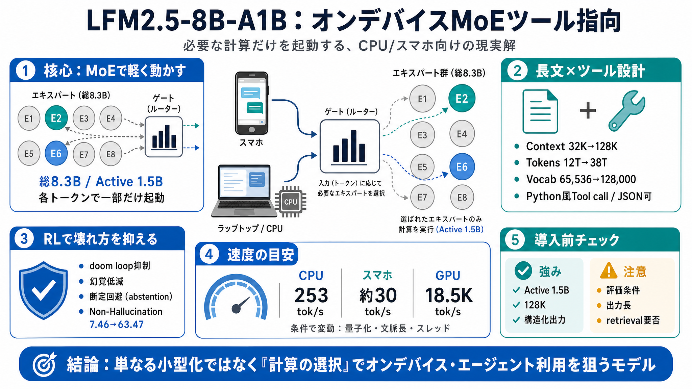

Liquid AI Releases LFM2.5-8B-A1B: An On-Device MoE Model With ...
# Liquid AI Releases LFM2.5-8B-A1B: An On-Device MoE Model With 8.3B Total and 1.5B Active Parameters. Liquid AI just sh…

オンデバイス“現実解”
Liquid AIの小型MoE言語モデルは、推論時に必要な一部だけを起動し、ツール呼び出しを扱いやすい形でエージェント利用を意識しています。
軽さの壁
小型化だけでは性能とコストのトレードオフが残りますが、MoE（Mixture-of-Experts / 専門家混合）は“計算の選択”で推論負荷を抑えます。
※この“active parameters”の考え方が、ニュースの中心的な実装意図です（単なるサイズ縮小ではない）。
長文×ツール
前モデルからの主な進化は、コンテキスト長（32K→128K）と学習トークン量（12T→38T）、語彙サイズ（65,536→128,000）の拡大です。
RLで“壊れ方”を抑制
強化学習（RL）では、長い推論が破綻する“doom loop”、幻覚、そして不確かな問いへの無理な断定を減らす方向の報酬設計を狙います。
速度と対応
目標値として、CPUではM5 Maxで253 tokens/s、スマホで約30 tokens/s、GPUはNVIDIA H100で18.5K tokens/sが提示され、主要推論フレームワーク対応も強調されています。
導入前の点検
結論として、本モデルは「必要な計算だけを配分し、ツール連携の現実解」を狙う方向性が強い一方、再現性・出力長・評価条件は追加確認が安全です。
# Liquid AI Releases LFM2.5-8B-A1B: An On-Device MoE Model With 8.3B Total and 1.5B Active Parameters. Liquid AI just sh…
# LFM2.5-8B-A1B: an Even Better on-Device Mixture-of-Experts. Today, we're releasing **LFM2.5-8B-A1B**, an edge model bu…
# LiquidAI/LFM2.5-8B-A1B · Hugging Face : r/LocalLLaMA. [Skip to main content](https://www.reddit.com/r/LocalLLaMA/comme…
# LiquidAI / LFM2.5-8B-A1B like 75 Follow Liquid AI 3.38k. ### Instructions to use LiquidAI/LFM2.5-8B-A1B with libraries…
LFM2.5-8B-A1B is a step change from LFM2-8B-A1B: > Training toks: 12T → 38T > Context length: 32k → 128k > instruction f…